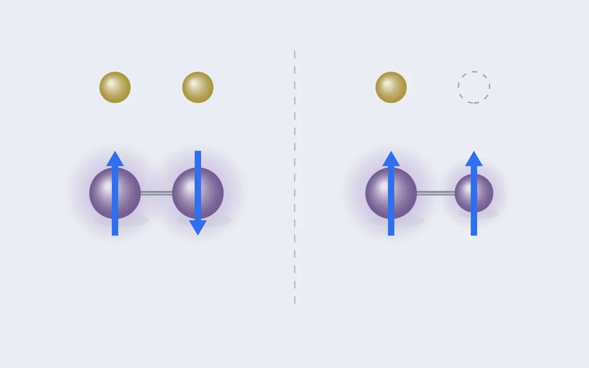

DFT 실습 [7] — 스핀 배치 비교: Na를 빼기 전은 반강자성, 뺀 뒤는 강자성
α-NaMnO₂(MnO₂ 층 사이에 Na가 들어 있는 배터리 양극 물질)에서 Na를 절반 뺄 때의 전압을 실습 [6]에서 처음 계산했습니다(2.40 V). 그 계산에는 확인할 것이 두 가지 남았습니다. 하나는 Na를 뺀 구조의 Mn#1이 정말 Mn³⁺인지, 다른 하나는 "두 Mn의 스핀은 같은 방향"이라는 가정이 전압을 얼마나 바꾸는지입니다. 첫 번째 답은 제 판단 실수를 바로잡았고, 두 번째 답은 Na를 빼기 전과 뒤의 구조가 서로 다른 스핀 배치를 선호한다는 것이었습니다.

이 글에 나오는 말
- 원래 구조와 Na 뺀 구조: 이 글의 8원자 셀에서 Na가 다 찬 Na₂Mn₂O₄(x = 1)를 원래 구조, Na 하나를 뺀 NaMn₂O₄(x = 0.5)를 Na 뺀 구조라고 부릅니다. Na 뺀 구조의 두 Mn을 Mn#1, Mn#2라고 부릅니다.
- 자기모멘트로 가수 읽기: DFT는 가수를 직접 출력하지 않아서 Mn마다 계산한 자기모멘트로 읽습니다. 실습 [5]부터 쓴 C2/m 구조에서 Mn³⁺는 약 3.8 μB, Mn⁴⁺는 약 3.1~3.2 μB입니다(이론 [2]).
- 강자성(FM), 반강자성(AFM), 준강자성: 모든 Mn의 스핀이 같은 방향이면 강자성, 이웃한 스핀이 반대 방향이라 합이 0이면 반강자성, 반대 방향인데 크기가 달라 합이 0이 아니면 준강자성입니다.
- MAGMOM: VASP 입력에서 원자마다 주는 초기 자기모멘트입니다. 부호로 스핀 방향을 정합니다.
- 바닥 상태: 같은 조성에서 계산한 상태 가운데 에너지가 가장 낮은 것입니다.
- 얀-텔러 왜곡: Mn³⁺ 둘레의 MnO₆ 팔면체가 한 방향으로 늘어나는 현상입니다. 크기는 긴 결합과 짧은 결합의 길이 비로 나타냅니다.
1. 첫 번째 확인: Mn#1은 Mn³⁺였다
실습 [6]에서 Na를 뺀 구조의 Mn#1은 d 모멘트가 3.86 μB였고, 저는 이것을 "기대보다 낮다"고 읽었습니다. 문제는 그 기대값이었습니다. 제가 기준으로 삼은 값은 실습 [4]의 4.35 μB였는데, 그것은 실습 [1]~[4]에서 쓴 R-3m 이상화 구조의 값이었습니다. 그래서 같은 C2/m 원래 구조의 이온별 모멘트를 기준값으로 뽑아 나란히 놓았습니다.
| Mn d 모멘트 (μB) | O p 분극 (μB) | |
|---|---|---|
| Mn³⁺, R-3m 이상화 구조 (실습 [4]) | 4.35 | −0.25 |
| Mn³⁺, C2/m 원래 구조 (기준값) | 3.82 | −0.006 |
| Na 뺀 구조의 Mn#1 | 3.86 | · |
| Na 뺀 구조의 Mn#2 | 3.17 | · |
Mn#1의 3.86은 같은 C2/m 구조의 Mn³⁺(3.82)와 사실상 같습니다. Mn#1은 Mn³⁺였고, 전하는 3+와 4+로 깔끔하게 나뉘어 있었습니다. 같은 Mn³⁺인데도 구조가 R-3m이냐 C2/m이냐에 따라 모멘트가 4.35와 3.82로, 산소 분극은 −0.25와 −0.006으로 크게 다릅니다. 원자 둘레의 구 안에서 잰 모멘트의 절대값은 구조에 따라 이만큼 달라집니다. 그러니 모멘트는 같은 구조 계열끼리만 비교한다. 알고 있던 규칙인데, 판단할 때 다른 구조의 숫자를 가져왔던 것입니다.
그러면 남은 질문은 하나입니다. Mn#1이 Mn³⁺인데 왜 얀-텔러 왜곡은 절반으로 줄었나(긴/짧은 결합 비 1.24 → 1.13). 실습 [6]에서 세운 두 가설 가운데 "전하가 3+와 4+로 덜 나뉘었다"는 방금 배제됐으니, 남은 셀 크기의 제약이 유력합니다. Mn이 두 개뿐인 셀에서 Mn³⁺ 팔면체는 작은 Mn⁴⁺ 팔면체와 모서리를 공유하고 있어서 충분히 늘어나지 못한다는 해석입니다.
연구와의 연결
이 해석이 맞다면 왜곡의 크기는 자기 자리의 산화 상태만이 아니라 이웃이 누구인가에도 따라 달라진다는 뜻입니다. 이 연구의 최종 대상인 고엔트로피 조성(Mn 자리에 여러 원소를 섞은 물질)은 "Mn 옆에 무엇이 있느냐"가 자리마다 다른 물질이라, 자리마다 국소 구조를 수치(특징)로 뽑을 때 자리 자신의 상태와 이웃 환경을 따로 봐야 한다는 단서가 여기서 처음 나왔습니다. §5에서 이 가설을 직접 시험하는 계산을 설계했습니다.
2. 두 번째 확인: 원래 구조의 스핀 배치
실습 [6]의 모든 계산은 두 Mn의 스핀을 같은 방향으로 놓았습니다(강자성, FM). 그런데 실제 α-NaMnO₂는 반강자성(AFM)으로 알려져 있습니다. INCAR의 한 줄만 바꿔 같은 이완을 반복했습니다.
MAGMOM = 2*0.0 4.0 -4.0 4*0.0 ! 두 Mn의 스핀을 반대로3스텝 만에 수렴했고 셀 합계 자기모멘트는 0, 두 Mn은 +3.809와 −3.809로 크기는 같고 부호만 반대였습니다. 크기는 FM의 3.822와 사실상 같으니, 스핀 방향을 뒤집어도 각 Mn의 국소 상태(Mn³⁺ 고스핀)는 그대로입니다. 에너지는 FM보다 셀당 27 meV(화학식당 13.5 meV) 낮았습니다. 이 셀에서는 AFM이 더 안정하고, 실험과 방향이 맞습니다. 다만 이건 8원자 셀에서 만들 수 있는 가장 단순한 AFM이라, 실험에서 측정된 자기 구조와 같다고까지는 말할 수 없습니다.
OUTCAR 부피 줄의 함정
부피를 확인하려고 grep "volume of cell" OUTCAR의 첫 줄과 끝 줄을 봤더니
45.47 → 90.81 ų. 두 배로 커진 줄 알고 놀랐습니다. 알고 보니 OUTCAR는 대칭 분석
단계에서 원시 셀(C 중심 격자의 절반 크기 셀)의 부피를 먼저 찍고,
그 줄이 첫 번째로 잡힌 것이었습니다. 실제 변화는 90.94 → 90.81, −0.14%. Na를 뺀
구조에서 이 현상이 없었던 건, Na 하나가 빠지며 C 중심 대칭이 이미 깨져 더 작은
원시 셀이 없었기 때문입니다. 부피 변화는 첫 줄이 아니라 두 번째 줄부터 봅니다.
3. Na를 뺀 구조는 강자성이 안정했다
전압까지 비교하려면 Na를 뺀 구조도 스핀을 뒤집어야 합니다. 여기서는 Mn³⁺(스핀 4)와 Mn⁴⁺(스핀 3)를 반대로 놓게 되니 셀 합계가 0이 아니라 1로 남습니다. 이런 배열을 준강자성(ferrimagnetic)이라고 부릅니다. MAGMOM의 순서가 중요했습니다. 실습 [6]에서 Mn#1이 3+, Mn#2가 4+였으니 Mn#1에 +4, Mn#2에 −3을 줘서 전하 배치는 그대로 두고 스핀만 뒤집었습니다. 순서를 반대로 주면 전하 배치까지 바뀐 다른 계산이 되어 비교가 흐려집니다.
MAGMOM = 1*0.0 4.0 -3.0 4*0.0 ! Na, Mn#1(3+) 위, Mn#2(4+) 아래결과는 셀 합계 1.0000, Mn#1 +3.819, Mn#2 −3.124로 의도대로였습니다. 그런데 에너지는 FM보다 셀당 72 meV 높았습니다. 두 구조를 나란히 놓으면:
| FM (eV/셀) | 반대 스핀 배열 (eV/셀) | 더 안정한 쪽 | |
|---|---|---|---|
| Na₂Mn₂O₄ (원래) | −50.780359 | −50.807393 (AFM) | AFM, 27 meV 낮음 |
| NaMn₂O₄ (Na 뺀 것) | −47.076213 | −47.003930 (준강자성) | FM, 72 meV 낮음 |
두 구조의 선호가 반대입니다. Mn³⁺끼리만 있는 원래 구조는 스핀이 엇갈린 배치가 안정하고, Mn³⁺와 Mn⁴⁺가 이웃한 Na 뺀 구조는 스핀이 나란한 배치가 안정합니다. 혼합 원자가 망간 산화물에서는 Mn³⁺와 Mn⁴⁺ 사이를 전자가 오가며 두 스핀을 나란히 맞추는 효과(이중교환)가 알려져 있어서, 그 효과일 가능성이 높다고 봅니다. 가장 단순한 배치 두 개씩만 비교한 결과라는 단서는 붙여 둡니다.
4. 전압: 각 조성의 바닥 상태끼리 비교하면 2.42 V
물리적으로 맞는 비교는 각 조성의 바닥 상태끼리 비교하는 것입니다. 원래 구조는 AFM, Na를 뺀 구조는 FM입니다. 세 가지 조합을 모두 계산했습니다.
첫 전압(실습 [6])의 수정값
α-NaMnO₂ → Na₀.₅MnO₂ 평균 전압 ≈ 2.42 V (PBE+U, U = 3.9 eV, 조성별 바닥 자기 배열, 8원자 셀)
여기서 수많은 조성을 한꺼번에 계산하는 방법(하이스루풋)에 대한 교훈이 하나 나옵니다. 스핀 배치는 하나로 통일하기보다 조성마다 바닥 상태를 따로 찾는 것이 원칙이고, 통일한다면 어느 배치로 통일하느냐가 결과를 바꾼다. 이 계에서는 FM 통일이 우연히 바닥 상태에 가까웠지만, Na 함량에 따라 안정한 스핀 배치가 바뀌는 것을 봤으니 다른 조성에서도 그렇다는 보장은 없습니다. 수백 개 조성을 계산할 제 연구에서는 이 점검이 논문 보충 자료의 한 절이 될 것 같습니다. 실습 [6]에서 전압을 바꿀 수 있다고 적어 둔 세 가정(스핀 배치, 셀 크기, 범함수) 가운데 첫 번째가 이렇게 정리됐습니다.
5. 다음 실험 설계: 첫 배열 열거
§1의 질문, "이웃이 얀-텔러 왜곡을 바꾸는가"를 시험하려면 Mn³⁺ 옆에 오는 이웃을 바꿀 수 있어야 합니다. 8원자 셀로는 불가능하니 셀을 b축 방향으로 두 배(Na₄Mn₄O₈, 16원자)로 키웠습니다. Na 4개 중 2개를 빼면(같은 Na₀.₅MnO₂ 조성) 경우의 수는 6가지인데, pymatgen의 StructureMatcher(두 구조가 대칭 조작으로 같은지 판정하는 도구)로 같은 것끼리 묶으면 서로 다른 배열은 2개로 줄어듭니다.
sc.make_supercell([1, 2, 1]) # b축 2배
pairs = list(combinations(na, 2)) # Na 4개 중 2개 빼기: 6가지
groups = StructureMatcher().group_structures(cands)
# → 대칭적으로 다른 배열 2개- c1: Mn⁴⁺가 b축을 따라 줄지어 서는 배열. 8원자 셀 계산과 같은 배열을 두 배로 늘린 것으로 보여 대조군 역할을 합니다.
- c2: b축을 따라 Mn³⁺와 Mn⁴⁺가 번갈아 놓이는 배열. Mn³⁺의 이웃 구성이 c1과 달라지는 새 배열입니다.
작지만 이것이 이 연구의 기본 절차인 "배열 열거 → 대칭 중복 제거 → 계산"의 첫 사례입니다. 고엔트로피 조성에서는 경우의 수가 여섯이 아니라 수만 가지로 늘어나겠지만, 절차는 같습니다.
검산도 하나 넣어 두었습니다. KPOINTS를 4×4×4로 두면 b축이 두 배가 된 만큼 옛 셀의 4×8×4와 정확히 같은 샘플링이라, c1의 에너지는 8원자 결과의 두 배(−94.152 eV)에 가깝게 나와야 합니다. 그게 맞으면 슈퍼셀 세팅이 옳다는 증거이고, 그 위에서 c2와 비교할 수 있습니다. Mn⁴⁺를 둘 자리는 "Na 빈자리 두 개와 모두 이웃한 Mn"이라는 규칙으로 정했는데, 초기 추측일 뿐이라 결과의 이온별 모멘트로 확인할 예정입니다. 자기 배열은 §3의 결론대로 Na 뺀 구조의 바닥인 FM으로 뒀습니다.
두 계산은 제출되어 돌고 있습니다. 부끄러운 이야기로 마무리하면, 스크립트를 돌리려는데 터미널을 새로 열어서 가상환경(venv)이 꺼져 있었습니다. venv는 새 터미널마다 다시 켜야 합니다.
이날 배운 것들
- 모멘트는 같은 구조 계열끼리만 비교한다. 같은 Mn³⁺도 R-3m에서 4.35, C2/m에서 3.82. 기준값을 확인하지 않았다면 틀린 결론을 글로 남길 뻔했다.
- 안정한 스핀 배치는 조성에 따라 바뀔 수 있다. 원래 구조는 AFM, Na를 뺀 구조는 FM. 그래서 전압은 조성별 바닥 상태끼리 비교한다.
- 그럴듯한 가정이 가장 위험하다. "실험이 AFM이니 전부 반대 스핀"은 FM 통일보다 더 멀리 벗어났다.
- MAGMOM의 순서는 전하 배치를 정한다. 스핀만 바꾸려면 어느 자리가 몇 가인지 알고 줘야 한다.
- OUTCAR의 첫 부피 줄은 원시 셀일 수 있다. 부피 변화는 두 번째 줄부터 본다.
- 배열 열거 → 중복 제거 → 계산. 여섯 가지가 둘로 줄어드는 작은 사례로, 대량 계산 절차의 첫 형태를 만들었다.
다음. 슈퍼셀 두 배열의 결과입니다. c1이 8원자 결과를 재현하는지 검산하고, c2에서 Mn³⁺의 이웃이 바뀌었을 때 얀-텔러 왜곡이 다시 커지는지를 봅니다. 커진다면 "이웃이 국소 구조를 바꾼다"는 가설의 첫 증거이고, 두 배열 중 어느 쪽이 더 안정한지에 따라 Na₀.₅MnO₂의 전압도 다시 계산합니다.

Seok
연구하면서 개발합니다. 배터리 재료를 원자 단위에서 계산하는 법을 바닥부터 배우는 중입니다. → 글 더 보기